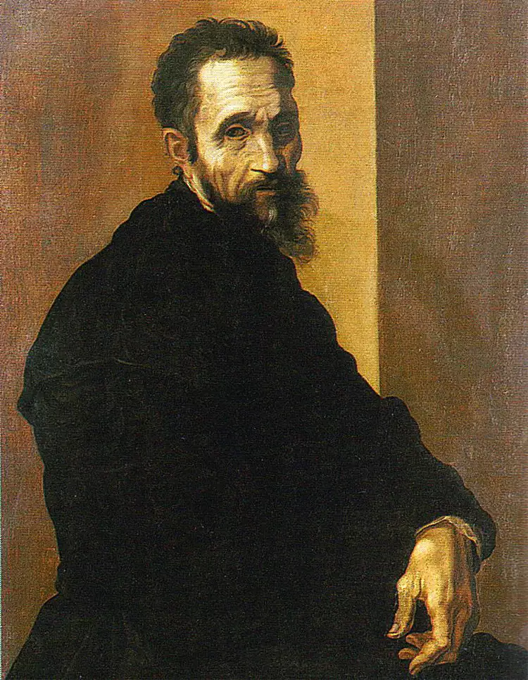

“Learning never exhausts the mind.” — Leonardo da Vinci”
“The Renaissance wasn’t just a time in history — it was a spark that lit the modern world.”

Disputation of the Holy Sacrament by Raphael
The Renaissance was a vibrant period of cultural, artistic, and intellectual revival in Europe from the 14th to 17th century. Inspired by ancient Greek and Roman ideas, it sparked major developments in art, science, literature, and humanist thinking.
CONCEPT OF HUMANISM
Portrait of Petrarch painted by Altichiero
In simple words, Humanism is a way of thinking that focuses on humans, their values, abilities, and worth.
It began during the Renaissance and encouraged people to study subjects like art, history, and literature, believing that humans can learn, grow, and improve the world through knowledge and reason.
CONCEPT OF NATURALISM

LEFT: Michelangelo’s Studies for the Libyan Sibyl
RIGHT: The Libyan Sibyl By Michelangelo
Naturalism evolved from the development of how artists studied the human form. It was depicted with more realism, appearing more true to nature. Human anatomy was better understood by some artists by studying dead bodies, which created even more realistic portrayals of muscles and limbs.
Leornado Da Vinci
Known for: Mona Lisa, The Last Supper
Famous for combining art with science, anatomy, and perspective.
The painter, engineer, architect and inventor crossed so many disciplines that he epitomized the term “Renaissance man.” Today da Vinci remains best known for two of his paintings, "Mona Lisa" and "The Last Supper."
Michelangelo
 Known for: David (sculpture), the Sistine Chapel ceiling
Master of sculpture and painting, with deep emotional expression.
Michelangelo was a sculptor, painter and architect widely considered to be one of the greatest artists. His work demonstrated a blend of psychological insight, physical realism and intensity never before seen.
Raphael

Known for: The School of Athens, Sistine Madonna
Celebrated for his balanced compositions and graceful figures.
Raphael was a painter and architect renowned for his clarity of form, balanced composition, and graceful figures. His work captured the ideals of harmony and beauty, reflecting the Renaissance focus on humanism and classical perfection.